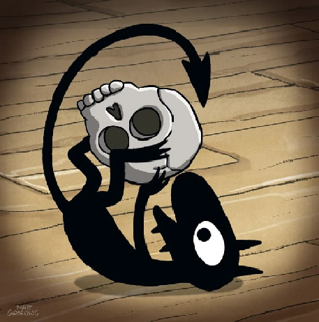

Luci es un demonio de la serie animada Desencanto, que se describe como malicioso, siniestro y un "diablo de hombros" que da malos consejos a la Princesa Bean. A pesar de su naturaleza, desarrolla una fuerte amistad con Bean y Elfo, incluso sacrificándose por ellos, y a menudo se le ve disfrutando de la vida con fiestas, alcohol y chicas. Su apariencia es la de una criatura sombría con cola de lanza, brazos y piernas, y puede manipular las sombras a su voluntad.
